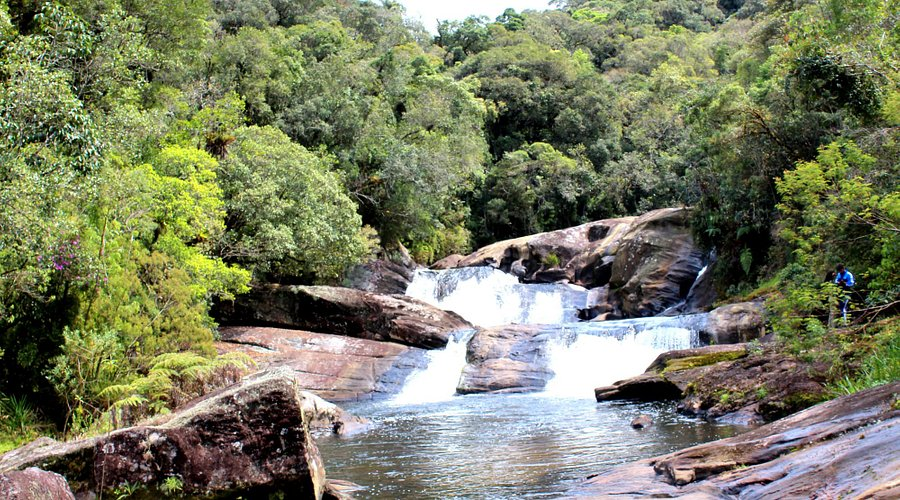

Sobre o Parque
Antes de apresentarmos o problema em questão , é necessário que você conheça sobre o Parque Estadual da Serra do Mar, desde sua extensão até seus aspectos. Aqui você pode conhecer sobre a história do Parque, sua criação, seus momentos históricos e os dias atuais do local, além de conhecer toda a fauna e flora já registrada lá, até hoje.
Conhecido como a maior Unidade de conservação de toda a Mata Atlântica, o Parque Estadual da Serra do mar foi criado em 1977, através do decreto estadual n°10.251, de 30 de agosto daquele ano. Com o intuíto de ser justamente o que ele é hoje. Foi ampliado em 2010 e hoje conta com cerca de 332 mil hectares que percorrem 25 municípios paulistas, indo desde a divisa com o Rio de Janeiro e o Vale do Ribeira, até o litoral sul de SP. O parque domina a paisagem litoral e suas florestas são lares de milhares de espécimes de animais, alguns em risco de estinção, como a ave Jacutinga , por exemplo.
O Parque da Serra do Mar também protegem os mananciais que abastecem a Baixada Santista, o Litoral Norte, o Vale do Paraíba e uma parte da Região Metropolitana de São Paulo, garantindo o equilíbrio climático e a estabilidade de encostas. No Parque Estadual Serra do Mar, em diversos pontos de sua extensão, são encontradas comunidades tradicionais de quilombolas, indígenas, caipiras e caiçaras. Uma das comunidades indígenas mais fortes da Serra do Mar, a dos Tamoios, aproveita desse espaço para continuar efetivamente preservando sua cultura e tradição. A manutenção dessa estrutura e os mecanismos de proteção social que envolvem os quilombolas são o foco da pesquisa “Vias Locais diante do Projeto Urbano”.
Gestão
O PESM é gerenciado por dez núcleos administrativos, devido a sua enorme extensão. Estes são:
- Bertioga
- Caraguatatuba
- Cunha
- Curucutu
- Itariru
- Itutinga-Pilões
- Padre Dória
- Picinguaba
- Santa Virgínia
- São Sebastião
Cada núcleo trabalha para manter a interação social e a preservação ambiental. Além dos núcleos, o Parque também é administrado pela Fundação Florestal, que é uma organização vinculada à Secretaria de Estado do Meio Ambiente
Fauna
1361 espécies de animais já foram registrados por toda a extensão do Parque. Segundo o Ibama, alguns dos principais animais em risco de extinsão encontram-se protegidos no local, como por exemplo o macaco-prego o bixo preguiça e a anta.
Flora
Cerca de 1200 tipos de plantas já foram registradas por toda a extensão do PESM e, segundo o Ibama, assim como a fauna, o parque também protege algumas das principais espécies de flora ameaçada, como o Palmito e a Orquídea Laelia Purpurata.
Fungo
O Parque da Serra do Mar também é lar de diversas espécies de fungos, de diversos formatos. exemplos dessa diversidade são o chamado "Véu de Noiva" e a "Orelha-de-pau", chamado também de "Pironga" ou "urupê".
Extensão
O Parque possui cerca de 3320 quilômetros quadrados, atravessando três regiões litorâneas (norte, central e sul). Seguindo a região da Grande São Paulo, a Serra atinge uma altitude média de 800 metros
Além de ser uma área de proteção ambiental, o Parque também é grande atração de turistas. Podemos listar mais de 50 trilhas que se é possível ter acesso no parque, com visitas a diversos pontos turísticos.
Rios
O PESM também conta com diversos rios por toda sua extensão. Esses rios podem servir de diversas formas, como ponto de turismo e atividades físicas, ou para cuidados aos animais e até mesmo para abastecimento, como o Rio Paraibuna, por exemplo
O Rio Paraibuna é o principal formador da bacia hidrográfica do Rio Paraíba do Sul, é considerado como rio de cabeceira e favorece muito a prática de esportes de aventura, como a canoagem, por exemplo.
Importância
 https://www.passagenspromo.com.br/blog/wp-content/uploads/2020/11/serra-do-mar-onde-fica.jpg
O maior corredor bilógico da Mata Atlântica no Brasil, destinado à preservação, à valorização da cultura local, à educação ambiental, às pesquisas científicas e à proteção de animais. O Parque Estadual da Serra do Mar busca incentivar as pessoas para a conservação dos recursos naturais que temos disponíveis.
O Parque é de suma importância para a sustentabilidade, principalmente, para os núcleos urbanos que estão em seu entorno, garantindo a amenização do clima e a estabilização de encostas. Seus diversos rios servem como bacias hidrográficas, bem como mananciais que abastacem diversos municípios ao redor, beneficiando milhões de habitantes.
Devido à sua grande importância, o Parque da Serra do Mar é considerado um ponto crucial das atenções de comunidades científicas, ONGs, governos, empresas privadas protetoras, e diversos outros setores, demonstrando a grande preocupação com a preservação da Mata Atlântica e com o aprofundamento de estudos sobre os seres vivos do local.
 https://www.infraestruturameioambiente.sp.gov.br
https://www.infraestruturameioambiente.sp.gov.br https://smastr16.blob.core.windows.net
https://smastr16.blob.core.windows.net https://pt.map-of-sao-paulo.com/img/1200/parque-da-serra-do-mar-mapa.jpg
https://pt.map-of-sao-paulo.com/img/1200/parque-da-serra-do-mar-mapa.jpg